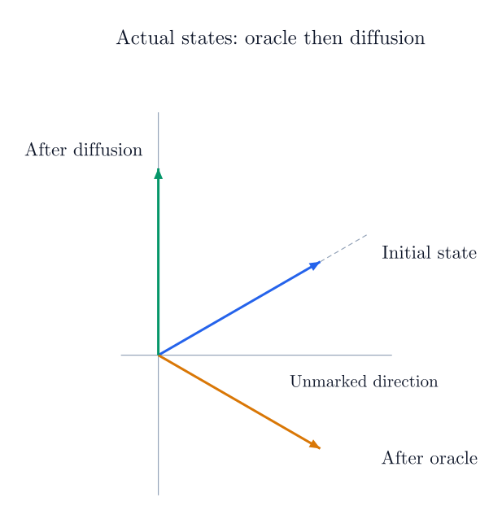
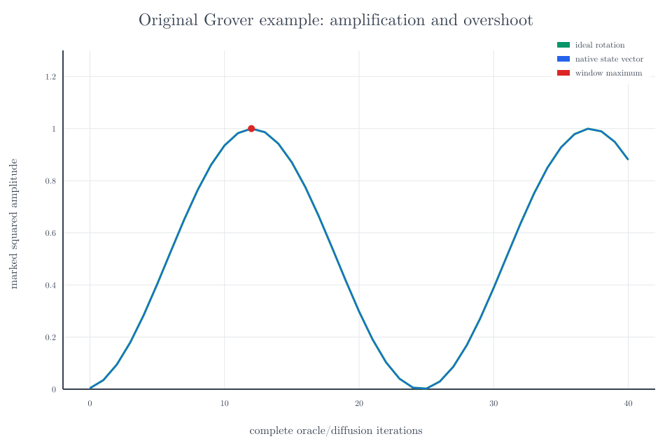
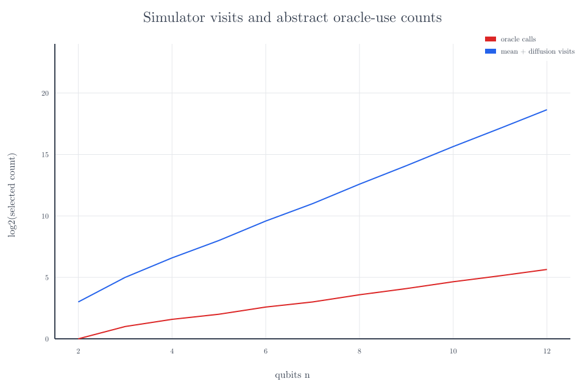
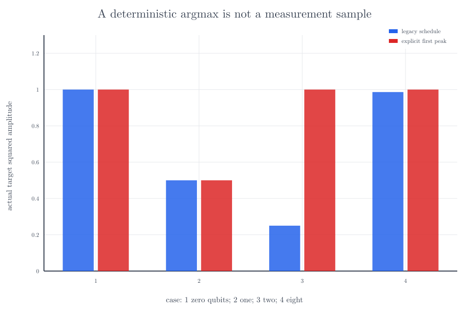

Grover search: two reflections, a stopping choice
Abstract
An oracle recognizes one marked item among N possibilities; the aim is high success probability with few oracle uses. Grover amplitude amplification rotates a uniform state toward the marked state, but extra iterations can undo that progress. This report follows actual oracle and diffusion amplitudes on four states, retains the original 256-state example, and separates an approximate legacy stopping rule from a first-peak estimate. The implementation is a classical floating state-vector simulator given the target index. Its historical measured field is a deterministic argmax, not a sampled measurement, and its CPU and storage costs differ from the quantum query model.
Four states, one complete iteration
With two qubits and marked index three, preparation gives four amplitudes approximately one half. The oracle negates only the marked amplitude. Their mean becomes approximately one quarter, and diffusion replaces each amplitude a by twice that mean minus a. The three unmarked amplitudes approach zero while the marked amplitude approaches one.
The table prints native phase snapshots. For the diagram, the horizontal coordinate is the amplitude along the normalized uniform unmarked direction, and the vertical coordinate is the marked amplitude. All three unmarked amplitudes agree, so that horizontal coordinate is √3 times one of them. The diagram uses equal scales and actual values; its exact-arithmetic geometry is derived next.
#include <dm/dm.hpp>
int main() {
std::filesystem::create_directories("build");
const auto t = dm::algorithms::grover_trace(2, 3, 1);
const auto &step = t.steps.at(0);
std::print("| basis index | initial real amplitude | after oracle | after diffusion |\n| ---: | ---: | " "---: | ---: |\n");
for (std::size_t i = 0; i < 4; ++i)
std::print("| {} | {:.17g} | {:.17g} | {:.17g} |\n", i,
t.initial[i].real(), step.after_oracle[i].real(),
step.after_diffusion[i].real());
std::print("\nActual oracle mean {:.17g}; marked squared amplitude {:.17g}; final mass {:.17g}; " "deterministic argmax {}.\n",
step.oracle_mean.real(), step.marked_probability,
dm::algorithms::grover_state_mass(t.run.state),
t.run.result.measured);
const double x0 =
std::sqrt(3.) * t.initial[0].real(), y0 =
t.initial[3].real(), xo =
std::sqrt(3.) * step.after_oracle[0].real(), yo =
step.after_oracle[3].real(), xd =
std::sqrt(3.) * step.after_diffusion[0].real(), yd =
step.after_diffusion[3].real();
dm::graphics::Diagram d(230, 1000);
dm::graphics::DiagramStroke axis;
axis.color = {148, 163, 184};
axis.width = 1.2;
d.path({{-.2, 0}, {1.25, 0}}, axis).path({{0, -.75}, {0, 1.3}}, axis);
auto reflection = axis;
reflection.dashed = true;
d.path({{0, 0}, {1.3 * x0, 1.3 * y0}}, reflection);
dm::graphics::DiagramStroke arrow;
arrow.arrow = true;
arrow.width = 3;
arrow.color = {37, 99, 235};
d.path({{0, 0}, {x0, y0}}, arrow);
arrow.color = {217, 119, 6};
d.path({{0, 0}, {xo, yo}}, arrow);
arrow.color = {5, 150, 105};
d.path({{0, 0}, {xd, yd}}, arrow);
d.text({1.45, .55}, "Initial state", 23).text({1.45, -.55}, "After oracle",
23).text({-.4, 1.1},
"After diffusion", 23).text({1.1, -.14}, "Unmarked direction", 21).text({.6, 1.7}, "Actual states: oracle then diffusion", 25).save_svg("build/grover_reflections.svg");
if (t.run.result.measured != 3 || step.marked_probability < .999999999)
throw std::runtime_error("four-state amplification");
}| basis index | initial real amplitude | after oracle | after diffusion |
|---|---|---|---|
| 0 | 0.49999999999999989 | 0.49999999999999989 | -5.5511151231257827e-17 |
| 1 | 0.49999999999999989 | 0.49999999999999989 | -5.5511151231257827e-17 |
| 2 | 0.49999999999999989 | 0.49999999999999989 | -5.5511151231257827e-17 |
| 3 | 0.49999999999999989 | -0.49999999999999989 | 0.99999999999999978 |
Actual oracle mean 0.24999999999999992; marked squared amplitude 0.99999999999999956; final mass 0.99999999999999956; deterministic argmax 3.

Derive the rotation
For one marked basis state \(|w\rangle\), let \(|u\rangle\) be the normalized uniform superposition of the N−1 unmarked states. For N>1,
In this ordered orthonormal basis, the oracle O flips the marked coordinate, and diffusion D reflects about the initial state:
Their product is a rotation by twice theta:
For N=4, theta=π/6. The initial angle is π/6 and one iteration reaches π/2, giving ideal probability one. Actual Hadamard and reflection arithmetic approximates these values in double precision. The symmetry of the unmarked coordinates is visible in the table, while the printed norm reveals that exact unitarity is a mathematical model rather than a bit-level claim about the simulator.
Choose a first peak, rather than calling an approximation optimal
The first continuous maximum occurs at \(k_*=\pi/(4\theta)-1/2\). A nearby nonnegative integer gives the first-lobe stopping estimate. The new helper uses \(\lfloor\pi/(4\theta)\rfloor\), with explicit constant-probability handling for N=1 and N=2. It is a scalar theory estimate, not an exhaustive search over arbitrarily late iterations or a guarantee about rounded probabilities.
The legacy grover API retains \(\operatorname{round}(\pi\sqrt N/4)\). It is
not generally the best integer choice: for N=4 it takes two steps and returns a
target squared amplitude near one quarter, whereas one step is near unity.
Retaining this schedule makes old results reproducible; grover_run accepts an
explicit count.
Retain the original target 42 among 256 states
Here the legacy count is thirteen and the first-peak estimate is twelve. The following complete native trace executes forty iterations once. Its window maximum comes from those actual probabilities; the ideal curve is a separately named scalar reference. A window maximum is not a global maximum over all future iterations. Further iterations rotate past the first peak and eventually revisit high probabilities.
#include <dm/dm.hpp>
int main() {
std::filesystem::create_directories("build");
const auto old = dm::algorithms::grover(8, 42);
const int first = dm::algorithms::grover_first_peak_iterations(8);
const auto t = dm::algorithms::grover_trace(8, 42, 40);
std::vector<double> x{0}, p{std::norm(t.initial[42])}, ideal{
dm::algorithms::grover_ideal_probability(8, 0)
};
for (const auto &s : t.steps) {
x.push_back(s.iteration);
p.push_back(s.marked_probability);
ideal.push_back(dm::algorithms::grover_ideal_probability(8, s.iteration));
}
const auto peak = std::max_element(p.begin(), p.end()) - p.begin();
std::print("N=256, target=42. Legacy iterations {}; argmax {}; target squared amplitude {:.12f}.\n",
old.iterations, old.measured, old.success_prob);
std::print("First-peak estimate {}; actual probability there {:.12f}; displayed window maximum {:.12f} " "at {}; probability at 40 {:.12f}.\n",
first, p[first], p[peak], peak, p.back());
std::print("Sequential classical scan under a uniformly located target, querying even its last " "position: expected checks {}.\n\n",
(256. + 1) / 2);
std::print("| iterations | actual target probability | scalar ideal reference | actual state mass |\n| " "---: | ---: | ---: | ---: |\n");
for (int k : {0, 1, 8, 12, 13, 20, 25, 37, 40})
std::print("| {} | {:.12f} | {:.12f} | {:.12f} |\n", k, p[k], ideal[k],
dm::algorithms::grover_state_mass(k
? t.steps[k - 1].after_diffusion
: t.initial));
auto plot = dm::graphics::RPlot::create();
plot.line(x, ideal, "ideal rotation", {5, 150, 105}, 3).line(
x, p, "native state vector", {37, 99, 235}, 1.5).points(
{double(peak)}, {p[peak]}, "window maximum", {220, 38, 38}, 5).title(
"Original Grover example: amplification and overshoot").x_label(
"complete oracle/diffusion iterations").y_label("marked squared amplitude").y_limits(0, 1.3).save_svg("build/grover_original.svg");
if (old.iterations != 13 || first != 12 || peak != 12 || p[12] <= p[13])
throw std::runtime_error("original stopping comparison");
}N=256, target=42. Legacy iterations 13; argmax 42; target squared amplitude 0.986186240104. First-peak estimate 12; actual probability there 0.999947042103; displayed window maximum 0.999947042103 at 12; probability at 40 0.880213664974. Sequential classical scan under a uniformly located target, querying even its last position: expected checks 128.5.
| iterations | actual target probability | scalar ideal reference | actual state mass |
|---|---|---|---|
| 0 | 0.003906250000 | 0.003906250000 | 1.000000000000 |
| 1 | 0.034790992737 | 0.034790992737 | 1.000000000000 |
| 8 | 0.763722144019 | 0.763722144019 | 1.000000000000 |
| 12 | 0.999947042103 | 0.999947042103 | 1.000000000000 |
| 13 | 0.986186240104 | 0.986186240104 | 1.000000000000 |
| 20 | 0.297968850788 | 0.297968850788 | 1.000000000000 |
| 25 | 0.002300908306 | 0.002300908306 | 1.000000000000 |
| 37 | 0.999523446236 | 0.999523446236 | 1.000000000000 |
| 40 | 0.880213664974 | 0.880213664974 | 1.000000000000 |

The field measured is the first argmax of the final squared amplitudes. No
random number is drawn and no state collapse occurs. For N=2, all integer
iteration counts have ideal marked probability one half, and the deterministic
argmax can be zero even when the marked index is one. Returning the target as
the most probable index in a larger example does not mean a sampled measurement
must succeed.
The classical comparison above specifies its stopping protocol and a uniform target location; its expectation is (N+1)/2, or 128.5 checks at N=256. The quantum query model counts uses of a supplied phase oracle and allows failure probability. State preparation, oracle synthesis, verification and hardware costs require additional assumptions. This classical simulator is given the target index and updates every amplitude, so that query comparison is not a CPU benchmark or a claim of implemented quantum speedup.
Count the classical work separately
Let N=2ⁿ and K be complete iterations. Preparation applies n Hadamards to N/2 amplitude pairs each. Every subsequent oracle negates one known target entry, then the mean and diffusion loops each visit all N amplitudes. A final argmax scans N candidates:
These are selected logical visits, not scalar FLOPs or physical gate costs. Uniform initialization, probability extraction, snapshot copies and allocation have their own costs. Ordinary simulation uses O(nN+KN) work and O(N) state/output storage. With K proportional to √N, the iteration work is O(N^(3/2)); the quantum oracle-use model instead counts O(√N) calls. Input bit count n therefore produces exponentially growing classical simulation work and storage.
#include <dm/dm.hpp>
int main() {
std::filesystem::create_directories("build");
std::print("| qubits n | amplitudes N | legacy count | chosen first-peak count | H pairs | mean visits " "| diffusion visits | final argmax visits | state payload bytes |\n| ---: | ---: | ---: | " "---: | ---: | ---: | ---: | ---: | ---: |\n");
std::vector<double> x, queries, visits;
for (int n = 2; n <= 12; ++n) {
const auto N = std::size_t{1} << n;
const int k = dm::algorithms::grover_first_peak_iterations(n);
const auto r = dm::algorithms::grover_run(n, N - 1, k);
const auto &w = r.work;
if (w.hadamard_pairs != std::size_t(n) * (N / 2) ||
w.oracle_calls != std::size_t(k) || w.mean_terms != N * k ||
w.diffusion_updates != N * k || w.argmax_terms != N)
throw std::runtime_error("operator visits");
std::print("| {} | {} | {} | {} | {} | {} | {} | {} | {} |\n", n, N,
dm::algorithms::grover(n, N - 1).iterations, k,
w.hadamard_pairs, w.mean_terms, w.diffusion_updates,
w.argmax_terms, N * sizeof(dm::algorithms::Complex));
x.push_back(n);
queries.push_back(std::log2(double(w.oracle_calls)));
visits.push_back(std::log2(double(w.mean_terms + w.diffusion_updates)));
}
auto p = dm::graphics::RPlot::create();
p.line(x, queries, "oracle calls", {220, 38, 38}, 2).line(
x, visits, "mean + diffusion visits", {37, 99, 235}, 2).title(
"Simulator visits and abstract oracle-use counts").x_label("qubits n").y_label("log2(selected count)").y_limits(0, 24).save_svg("build/grover_work.svg");
}| qubits n | amplitudes N | legacy count | chosen first-peak count | H pairs | mean visits | diffusion visits | final argmax visits | state payload bytes |
|---|---|---|---|---|---|---|---|---|
| 2 | 4 | 2 | 1 | 4 | 4 | 4 | 4 | 64 |
| 3 | 8 | 2 | 2 | 12 | 16 | 16 | 8 | 128 |
| 4 | 16 | 3 | 3 | 32 | 48 | 48 | 16 | 256 |
| 5 | 32 | 4 | 4 | 80 | 128 | 128 | 32 | 512 |
| 6 | 64 | 6 | 6 | 192 | 384 | 384 | 64 | 1024 |
| 7 | 128 | 9 | 8 | 448 | 1024 | 1024 | 128 | 2048 |
| 8 | 256 | 13 | 12 | 1024 | 3072 | 3072 | 256 | 4096 |
| 9 | 512 | 18 | 17 | 2304 | 8704 | 8704 | 512 | 8192 |
| 10 | 1024 | 25 | 25 | 5120 | 25600 | 25600 | 1024 | 16384 |
| 11 | 2048 | 36 | 35 | 11264 | 71680 | 71680 | 2048 | 32768 |
| 12 | 4096 | 50 | 50 | 24576 | 204800 | 204800 | 4096 | 65536 |

Degenerate sizes, validation and full-state ownership
Zero qubits represent a one-element state: the only possible answer is already known, so the first-peak helper returns zero. The legacy schedule still applies one global-phase iteration. One qubit has constant ideal success one half. Two qubits expose the default stopping approximation particularly clearly. These cases prevent deterministic argmax from being mistaken for probabilistic success.
#include <dm/dm.hpp>
int main() {
std::filesystem::create_directories("build");
std::print("| qubits | target | legacy count | legacy argmax | legacy squared amplitude | explicit " "count | explicit argmax | explicit squared amplitude |\n| ---: | ---: | ---: | ---: | ---: " "| ---: | ---: | ---: |\n");
std::vector<double> x, a, b;
for (int n : {0, 1, 2, 8}) {
const auto target = (std::size_t{1} << n) - 1;
const auto old = dm::algorithms::grover(n, target);
const int k = dm::algorithms::grover_first_peak_iterations(n);
const auto r = dm::algorithms::grover_run(n, target, k);
std::print("| {} | {} | {} | {} | {:.12f} | {} | {} | {:.12f} |\n", n,
target, old.iterations, old.measured, old.success_prob, k,
r.result.measured, r.result.success_prob);
x.push_back(x.size() + 1);
a.push_back(old.success_prob);
b.push_back(r.result.success_prob);
}
bool quota = false, target = false, negative = false;
try {
(void) dm::algorithms::grover_trace(2, 3, 1, {4, 12});
} catch (const std::length_error &) {
quota = true;
}
const auto full = dm::algorithms::grover_trace(2, 3, 1, {4, 13});
auto copy = full;
copy.steps[0].after_oracle[0] = 99.;
try {
(void) dm::algorithms::grover_run(8, 256, 1, {1, 1});
} catch (const std::invalid_argument &) {
target = true;
}
try {
(void) dm::algorithms::grover_success_trace(2, 3, -1);
} catch (const std::invalid_argument &) {
negative = true;
}
std::print("\nOne-short complete capture rejects: {}; exact cap retains {} complex values; invalid " "target rejected before state cap: {}; negative trace length rejected: {}; snapshots copy " "independently: {}.\n",
quota, full.captured_entries, target, negative,
full.steps[0].after_oracle[0].real() !=
copy.steps[0].after_oracle[0].real());
std::vector<double> left, right;
for (double q : x) {
left.push_back(q - .17);
right.push_back(q + .17);
}
auto p = dm::graphics::RPlot::create();
p.bars(left, a, "legacy schedule", {37, 99, 235}, .3).bars(
right, b, "explicit first peak", {220, 38, 38}, .3).title(
"A deterministic argmax is not a measurement sample").x_label(
"case: 1 zero qubits; 2 one; 3 two; 4 eight").y_label(
"actual target squared amplitude").y_limits(0, 1.3).save_svg(
"build/grover_controls.svg");
if (!quota || !target || !negative)
throw std::runtime_error("complete domain/capture controls");
}| qubits | target | legacy count | legacy argmax | legacy squared amplitude | explicit count | explicit argmax | explicit squared amplitude |
|---|---|---|---|---|---|---|---|
| 0 | 0 | 1 | 0 | 1.000000000000 | 0 | 0 | 1.000000000000 |
| 1 | 1 | 1 | 0 | 0.500000000000 | 0 | 0 | 0.500000000000 |
| 2 | 3 | 2 | 0 | 0.250000000000 | 1 | 3 | 1.000000000000 |
| 8 | 255 | 13 | 255 | 0.986186240104 | 12 | 255 | 0.999947042103 |
One-short complete capture rejects: true; exact cap retains 13 complex values; invalid target rejected before state cap: true; negative trace length rejected: true; snapshots copy independently: true.

The new run/trace APIs default to a complete state cap of 2²⁰ complex amplitudes; zero disables that policy cap. Legacy entry points have no optional state cap, but shifts, target indices and container sizes are checked before allocation. Negative qubit or iteration counts are rejected. The full trace preflights the known requirement
The default capture cap is one million complex-value units, zero disabling it. It excludes step metadata, probability fields, ordinary final output, capacities and allocation overhead; it is not a byte or peak-RAM limit. Known requirements are checked before gates or state allocation. Failure returns no partial trace. Initial, oracle, diffused and ordinary final states own independent storage. No input references or random-sampling state survive.
The single-step compatibility helper also accepts a nonempty finite complex vector outside the normal prepared state, validates it before mutation, and can leave a partial change on arithmetic overflow. Public simulations use owned local states, preserving their ordinary state-vector arithmetic without probability normalization. Independent calls share no mutable state. The rest of the quantum simulator retains its own contracts.
What the examples establish
Two native reflections explain amplification, and a finite actual trace shows overshoot. Correct stopping needs an integer choice and a stated success criterion. The old default is retained as an approximation, while an explicit count makes the comparison reviewable. Query complexity concerns an oracle model; this emulator's work and storage concern full classical vectors. Synthetic basis states are the problem itself here, so an unrelated dataset would add no evidence.
The primary source is L. K. Grover, [A fast quantum mechanical algorithm for database search](https://arxiv.org/abs/quant-ph/9605043), presented at STOC1996; the revised November1996 version explains inversion about the average. This report derives the two-reflection model for one marked state and separately measures the library's floating implementation. It makes no device-performance, cryptographic-resource or arbitrary-many-marked-state claim.
Verification compares legacy summaries and scalar probability traces bit for bit with a frozen pre-conversion implementation, reconstructs actual captured phases, checks selected work and complete caps, and compares against independent matrix/high-precision calculations. Invalid shifts/targets, zero counts, argmax ties, ownership and numerical boundaries accompany sanitizer checks. Complete programs, inspected local figures, API examples and both exports are verified before retiring the original report.